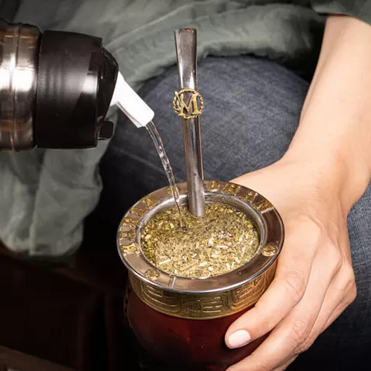

Las tribus sudamericanas hace siglos la consideraban un regalo de los dioses
Los guaraníes fueron los primeros en disfrutar del mate, bebiéndolo de una calabaza con una caña. Con el tiempo, esta bebida se expandió y se hizo popular en varios países de América del Sur, convirtiéndose en una tradición cultural muy importante.
Unión. Compañía. Bienestar.

¿Cómo preparar un mate?
Preparar un mate es todo un ritual. Algunos ingredientes y materiales son: Yerba mate, agua caliente, un mate y bombilla. Esto es guía paso a paso:
